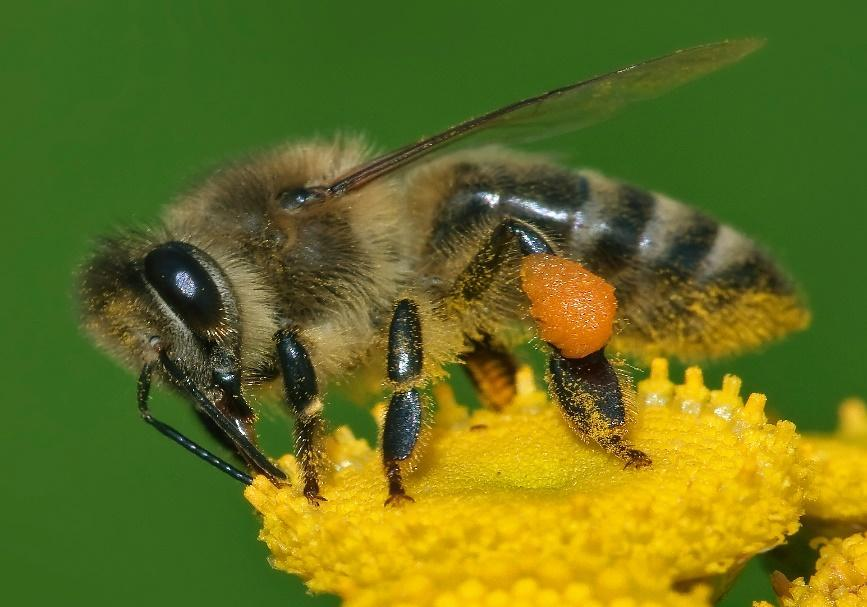

- Mel
- Cera
- Própolis (Resina natural)
- Geleira real

A abelha é um inseto fundamental para a polinização das plantas. Sem ela, muitas culturas agrícolas produziriam muito menos frutos.
Por isso, algumas cooperativas mantêm apiários como parte da produção.
Ficha produzida para a aula de programação web.